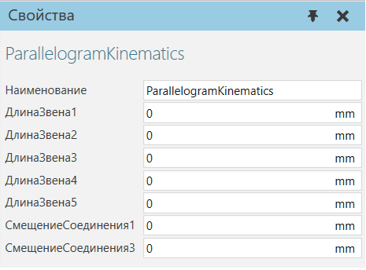

Кинематика параллелограмма |
|
Поведение «Параллелограммная кинематика» вычисляет прямую и обратную кинематику контроллера робота, используемого для операций укладки на поддоны, при которых ориентация запястья всегда направлена вниз.  СвойстваЕсли вы хотите использовать кинематику параллелограмм с обычными шарнирными роботами, установите ДлинаЗвена4 в ноль и введите расстояние от центра оси 3 до центра запястья в ДлинаЗвена3. В этом случае геометрия четвертого соединения может сместиться на значение ДлинаЗвена4. Чтобы компенсировать этот эффект, рассмотрите возможность перемещения фактической геометрии.
|